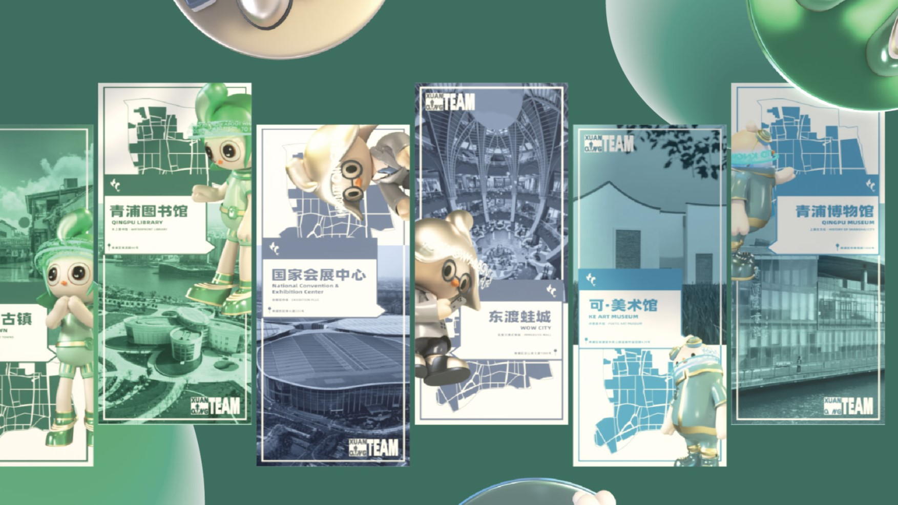
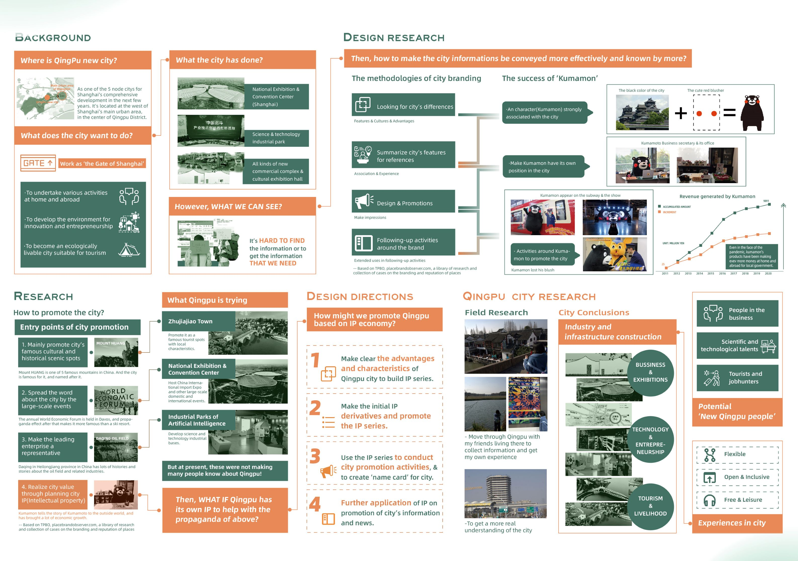
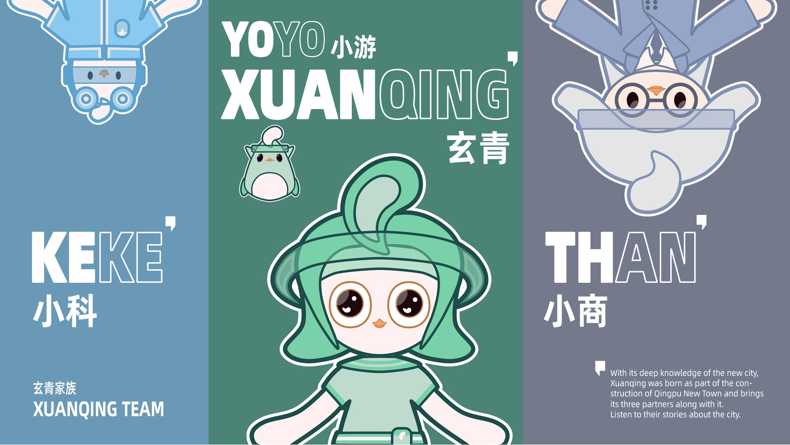
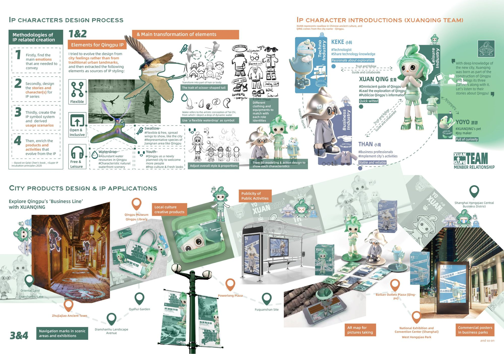
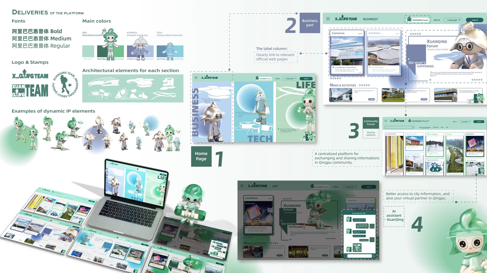

Qingpu's problem was never a shortage of assets — it was findability. The district has a historic water town, a national exhibition centre and an AI industrial park, and still “it's hard to find the information, or to get the information that we need.” XUAN'QING TEAM answers that by turning the city's three industries into four characters — and turning those characters into an interface to the city itself.
00Executive Summary
What this project is, and why it holds togetherThe construction of new suburban cities is a major direction in China's urbanisation. But the external images of those cities are thin and interchangeable, so most “new cities” fail to make an impression on the wider public. XUAN'QING TEAM is a comprehensive urban IP system designed and planned for Qingpu — built on the district's own characteristics and advantages, using design thinking to leave a point of memory in the city's promotion, and to make city information effectively accessible.
- The brief was reframed from “promote the city” to “make the city findable”. The research board lands on a blunt observation — the information exists, but nobody can reach it. That reframing is what turns a marketing commission into a design system.
- The IP was derived from city feelings, not from landmarks. Instead of drawing the skyline, the character system was extracted from four feelings — flexible, open & inclusive, free & leisure and youthful. Landmarks date; feelings travel.
- Strategy was benchmarked, not improvised. A study of Kumamon established the mechanism of city branding — a character strongly associated with the place, given its own position, then surrounded with activity. Qingpu's IP follows the same causal chain deliberately.
- The characters map onto the city's real economy. Each of the three main industry lines — technology, business and life — gets its own character, so the IP is a navigational structure as well as a mascot set.
- The system was built to be deployed, not just presented. A typeface, a three-colour code, a logo pair, a library of dynamic poses, a four-part digital platform and eleven mapped sites — the work continues until the IP is physically in the city.
| Format | Integrated city IP system — strategy, identity, character design, digital product, urban application |
| Scope | Design research · IP strategy · character system · visual identity · platform design · city application |
| City | Qingpu New Town, Shanghai — one of Shanghai's five comprehensive node cities |
| Year | 2022 |
| Deliverables | Background research · IP strategy · four characters + expression sheet · fonts & colour system · logo & stamps · website platform · on-site applications · promotional video |
01Background & Problem
Where Qingpu stands, and where it is stuckWhere is Qingpu New Town?
One of the five node cities in Shanghai's comprehensive node-city programme for the next ten years. It sits in the west of Shanghai, with Dianshan Lake — the largest lake — at the centre of Qingpu District.
What the city wants to do
GATE 4 — work as the “Gate of Shanghai”: undertake activities at home and abroad, develop an environment for innovation and entrepreneurship, and become an ecologically liveable city suitable for tourism.
What the city has already built
Business & exhibitions
The National Exhibition and Convention Center (Shanghai), plus a list of new commercial complexes and cultural exhibition halls.
Technology & industry
Science and technology industrial parks, including the industrial parks of artificial intelligence.
Tourism & heritage
Zhujiajiao, a renowned water town with strong cultural characteristics, and the wider Dianshan Lake landscape.
However, what can we see? In the research's own words: “It's hard to find the information, or to get the information that we need.” Qingpu is not short of assets — it is short of a legible surface. And at present, none of those achievements are making many people know about Qingpu.
Move the problem from marketing to legibility. A city-promotion brief normally produces a slogan and a poster, because the assumed problem is “not enough people have heard of us”. Auditing what the city had already built — and then asking what a visitor could actually find — relocated the problem to information architecture at city scale. That single shift is why the deliverable became a system with a searchable platform at its centre rather than a campaign.
02Design Research
Benchmark, method and fieldworkThe research asked one question — how can city information be conveyed more effectively, and known by more people? — and answered it along three tracks: how city branding actually works, how the category is currently promoted, and what Qingpu is personally like on the ground.
Track 01 — Benchmark: the mechanism behind Kumamon
| Step | What the benchmark shows | What XUAN'QING TEAM takes from it |
|---|---|---|
| 1 — Look for differences | Identify the city's features, cultures and advantages rather than competing on generic attractions. | The IP is derived from Qingpu's specific character, not from a template. |
| 2 — Summarise features | Condense the city into associations and experiences people can hold onto. | Four feelings become the design source for the whole character system. |
| 3 — Design & promote | Create a recognisable asset that makes an impression. | A character strongly associated with the city — the core of the Kumamon mechanism. |
| 4 — Follow up around the brand | Sustain activity around the brand so the association compounds over time. | Ongoing products, public activity and a live platform, not a one-off launch. |
Benchmark the mechanism, not the mascot. The useful thing to copy from Kumamon is not “have a cute animal” — it is the causal chain: a character strongly associated with the city → given its own position in the city → surrounded with continuous activity → which converts into measurable value. Stating that chain explicitly is what makes the four design directions defensible instead of decorative.
Track 02 — How cities currently promote themselves
Four entry points dominate city promotion today: leading with famous cultural and historical scenic spots; spreading the word through landmark buildings and architecture; letting a leading enterprise stand in for the city; and realising city value through planning city intellectual property. Qingpu attempts the first three — Zhujiajiao, the National Exhibition and Convention Center, and the AI industrial parks — and the research's conclusion is that this is exactly why the message never lands: “at present, these are not making many people know about Qingpu.”
Then what if Qingpu has its own IP to help with the promotion of the above? The fourth entry point — planning city intellectual property — is not an addition to the other three; it is the container that finally holds them. Zhujiajiao, the exhibition centre and the industrial parks stay as they are; the IP is what makes them findable.
Track 03 — Field research
The strategy was not written from a desk. The field research moved through Qingpu with friends who live there, to collect information and form first-hand experience across three zones — business & exhibitions, technology & entrepreneurship and tourism & livelihood — in order to get a more real understanding of the city. The resulting conclusion identified Qingpu's potential audience as the “new Qingpu people”: people in business, scientific and technological talent, and tourists and job-hunters, whose common expectation of the city is captured in three words — flexible, open & inclusive, free & leisure.

03Design Strategy
From research question to design directionThe research collapsed into a single “how might we”: how might we promote Qingpu based on the IP economy? It was answered with four sequential directions, which also define the order of the work that follows.
Make the advantages clear
Establish the advantages and characteristics of Qingpu clearly enough to build an IP series on top of them.
Build the first derivatives
Produce the initial IP derivatives and use them to promote the series.
Run city promotion with the IP
Use the IP series to conduct city promotion activities and to create a “name card” for the city.
Extend into information
Apply the IP further to the promotion of the city's information and news.
Sequence the strategy so each direction de-risks the next. Direction 01 must exist before anything can be drawn; 02 produces something to talk about; 03 puts it in front of people; 04 only then routes actual city information through the brand. Ordering the strategy this way converts a vague “build an IP” mandate into four gates that can each be checked before spending on the next.
04IP Character System
Discipline: character designEvolve the design from city feelings, not from traditional urban landmarks. This is the decision the whole character system rests on. Four elements were extracted from how Qingpu feels — flexible, open & inclusive, free & leisure, youthful — and those, rather than the skyline, became the sources of IP styling. A landmark can only be redrawn; a feeling can be animated, merchandised and lived in.
| Source element | Where it comes from | How it becomes form |
|---|---|---|
| Flexible | The swallow — note its scissor-shaped tail. | The tail becomes a signature silhouette, echoing the swifts that cross the Jiangnan water towns. |
| Open & inclusive | Water — Qingpu's most abundant resource and its characteristic natural scenery. | A waterdrop becomes the recurring symbol, reshaping into heads, limbs and props. |
| Free & leisure | The bird's spread wings — the city developing out of its past. | Poses and gestures built around openness rather than activity. |
| Youthful | Qingpu as a rising new city, with a growing population of young people. | Proportions, colour and expression line kept soft, bright and deliberately un-corporate. |
The four characters
XUANQING 玄青
#Omniscient guide of Qingpu · #Leads the exploration of Qingpu · #Quick-witted
With its deep knowledge of the new city, Xuanqing was born as part of the construction of Qingpu New Town and brings its three partners along with it. It evolves into a living index of Qingpu's information — the character that answers questions.
KEKE 小科
#Technologist · #Shares technology knowledge · #Passionate about exploration
Cool and clever — the guide and collaborator for the city's science and technology industrial parks.
THAN 小商
#Business professionals · #Implements the city's activities
Stable and reliable — the character that carries exhibitions, conventions and commercial districts.
YOYO 小游
#The playmaker · #Full of curiosity
The companion figure whose name literally means “to travel/play” — the small, curious presence that makes the system feel inhabited rather than corporate.
The naming and structure are deliberate: XUANQING and YOYO come from the city name 玄青 — xuan from 玄青 (the deep blue-green, and the town's colour) and qing from 青浦. The three team members correspond to Qingpu's three main industries, and together they form a family rather than a mascot — so the cast itself communicates what the city contains.


05Visual Identity
Discipline: visual design systemThe identity exists to keep a character-driven brand from drifting into inconsistency once it reaches eleven different sites. Every rule below exists because the system has to be applied by people other than its designer.
| Component | Specification | Why it exists |
|---|---|---|
| Typeface | Alibaba PuHuiTi (阿里巴巴普惠体) in Bold, Medium and Regular. | A freely licensed family with a full Chinese weight range — no licensing friction when the city and its partners reproduce material. |
| Colour code | Three key colours, one per industry line — Life (green, Xuanqing), Business (grey, Than), Tech (blue, Keke). | Colour is the navigation system: it tells the audience which of the city's three stories they are currently being told. |
| Logo & stamps | The XUAN'QING TEAM lock-up, plus a stamp variant for each character. | Gives partners something small, official and reproducible to co-brand with. |
| Section architecture | Line-drawn architectural silhouettes, one set per section. | Ties each industry line back to a real place without competing with the characters. |
| Dynamic elements | A library of character poses, expressions and actions. | Merchandise, signage and interface all need the characters doing different things — poses are infrastructure, not decoration. |

Give colour a job, so it survives handover. A three-colour palette could easily have been a taste decision. Assigning each colour to an industry line makes it functional: a partner in the technology park can apply the blue without being told which character belongs to them. The same logic drives the expression sheet — supplying poses rather than a single mascot image is what stops the brand collapsing to one logo once other people start using it.
06Digital Platform
Discipline: product & interface designThe platform is where the strategy stops being communication and starts being infrastructure. If the problem is that information cannot be found, the answer has to be a place where it can. The site is organised into four parts, and each one answers a different failure identified in the research.
Home page
The three industry lines — Business, Life and Tech — presented through their characters, so the entry point doubles as a legend for the whole system.
Business part
Comment, Exhibition, Xuanqing Forum (“see what's happening”), news & activities, and a map. Label columns link clearly out to the relevant official web pages — the city's existing information finally gets a surface.
Community part
A centralised sharing platform for exchanging information in the Qingpu community — turning one-way promotion into something residents also produce.
AI assistant
A XuanQing assistant embedded in the interface: better access to city information, and a virtual partner in Qingpu. The guide character becomes an actual service.
Let the IP become an interface, not a decoration. Most character branding stops at putting the mascot in a corner of the page. Here the guide character is promoted to the AI assistant — the thing that actually resolves the research's core complaint. That is the step that distinguishes a brand from a product, and it is why the platform is a deliverable rather than a mockup.
Interaction demo
07City Application
Discipline: placemaking & deploymentAn IP only exists once it is in the street. The system was mapped onto eleven landmark sites across Qingpu and deployed through three application types, so that the same character language works at the scale of a lamp-post banner and at the scale of a convention centre façade.
Navigation in scenic areas
Maps, signage and banner systems that use the characters to orient visitors between sites and exhibitions.
Local cultural products
Merchandise and creative products built from the expression sheet — the layer that lets the IP travel home with a visitor.
Public activity publicity
Outdoor and commercial posters, including an all-city map made for photographs — designed to be pictured and shared, not just read.
| Mapped sites |
|---|
| Zhujiajiao Ancient Town · Oriental Land (Dianshan Lake) · Dianshan Lake Landscape Avenue · QuShui Garden · Qingpu Museum · Qingpu Library · Powerlong Plaza · Fuquanhuai Star · Bailian Outlets Plaza (Qingpu) · National Exhibition and Convention Center (Shanghai), West Hongqiao Park · Shanghai Hongqiao Central Business District |
Design the deployment before the decoration. Listing the actual sites first — a water town, a garden, a museum, an outlet mall, a convention centre — forces the visual system to be tested against wildly different contexts: heritage, retail, culture and business. Anything that only works in one of them gets removed at this stage rather than discovered as a problem later, on a lamp-post in the rain.
08Video Presentation
The system in motion09Outcome
What was delivered, and what it demonstratesDelivered
- A background and design-research base: Qingpu's context and assets, city-branding methodology, a Kumamon benchmark and three-zone field research.
- An IP strategy expressed as four sequential design directions, derived from a single “how might we”.
- A four-character IP system mapped onto the city's three industry lines, with element transformation documented from feeling to form.
- A visual identity: Alibaba PuHuiTi typeface, a semantically assigned three-colour code, logo and stamp system, per-section architectural elements and a dynamic expression sheet.
- A four-part digital platform — home, business, community and an AI assistant — carrying the city's real information.
- An application plan covering eleven landmark sites through navigation, cultural products and public publicity.
The transferable lesson from XUAN'QING TEAM is that a brand is only as good as the structure underneath it. The characters are memorable, but what makes the project work is that they were assigned actual jobs — one per industry line, one as the guide, one as the companion — and then given a platform where they could do those jobs. Deriving the design from city feelings rather than landmarks is what made that possible: a feeling can be divided, assigned and deployed, whereas a skyline can only be drawn.